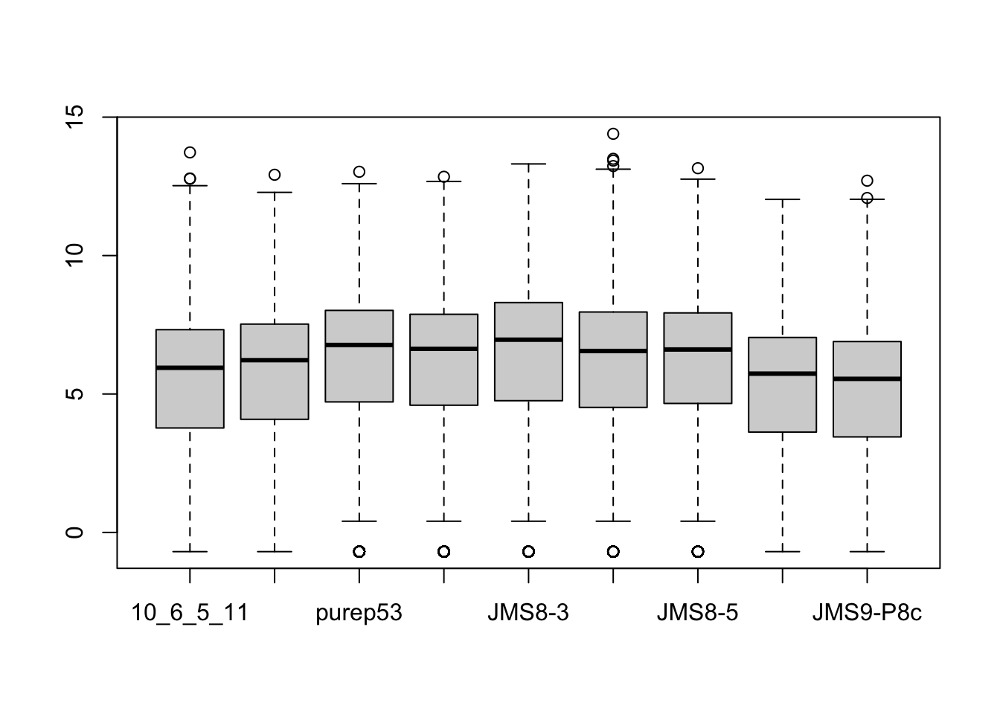
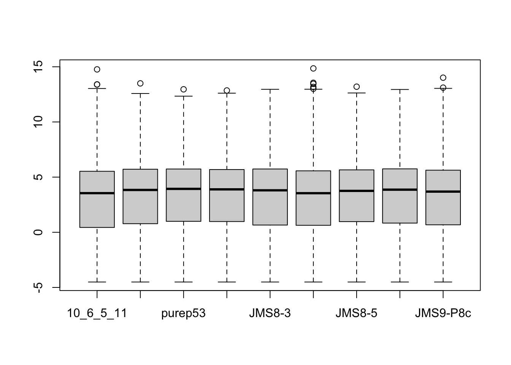
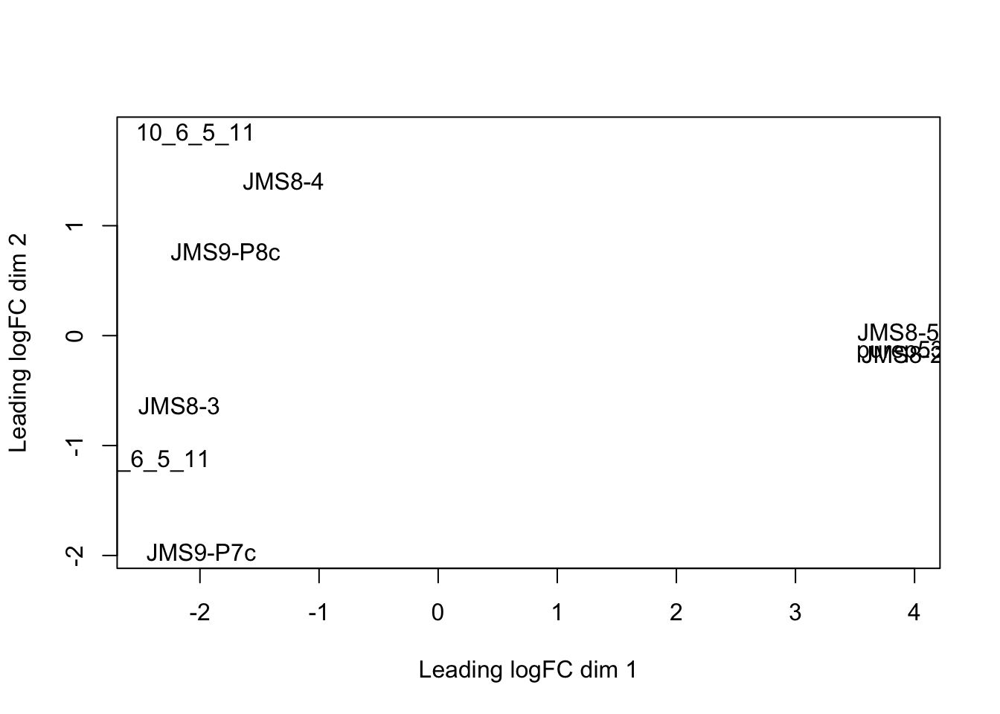
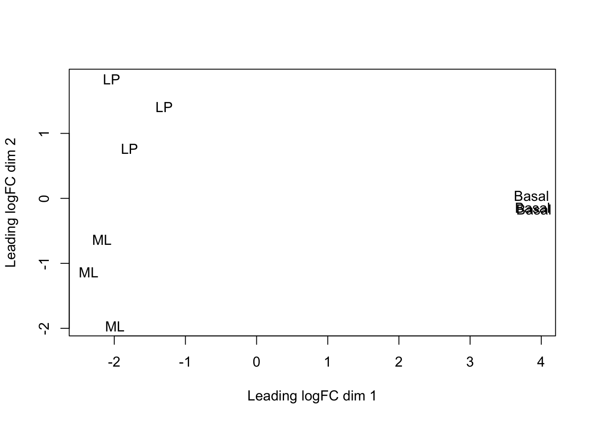
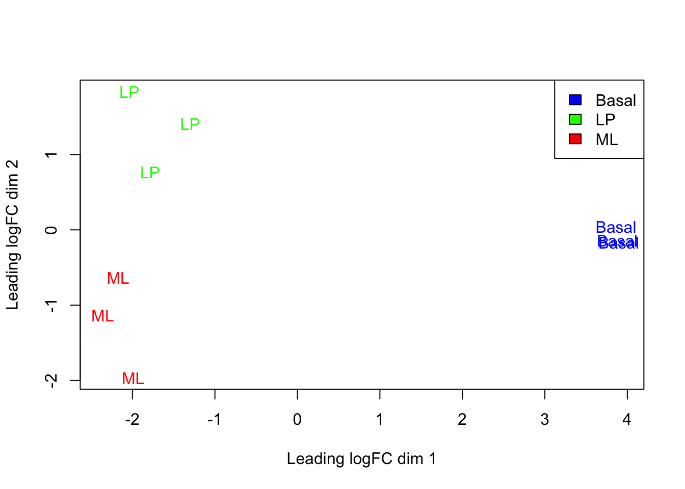
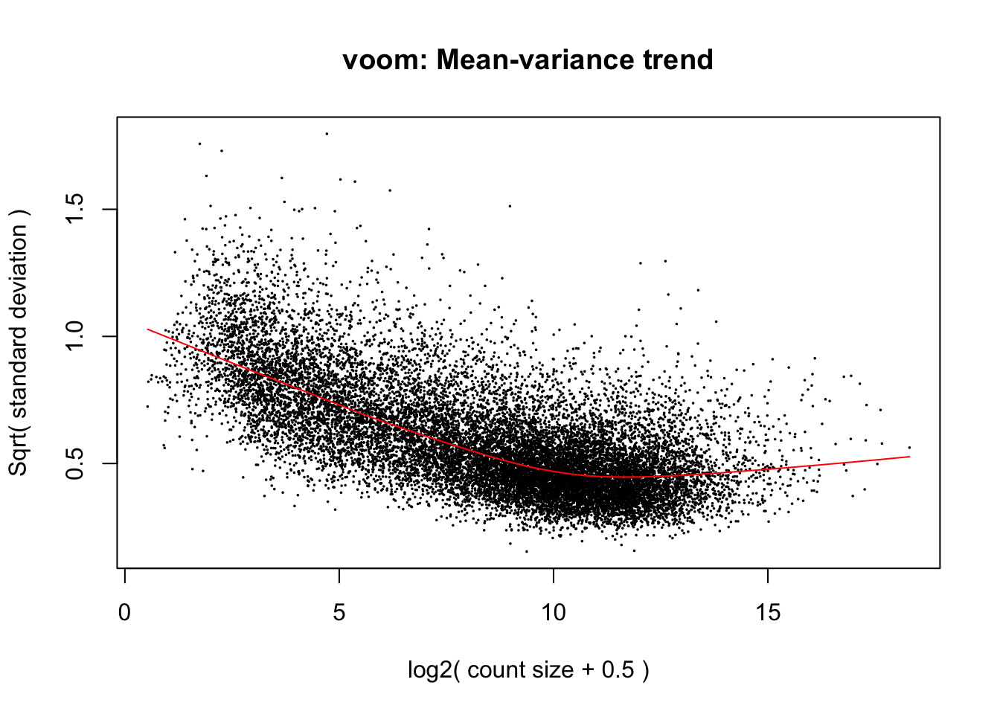
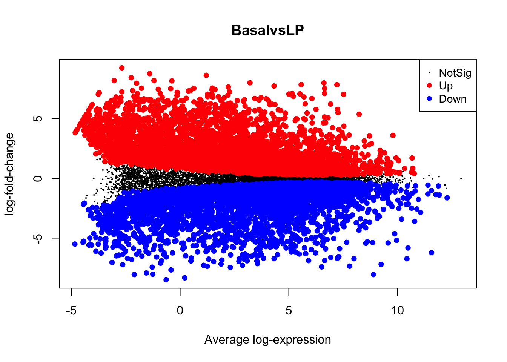

Chapter 4 Session 4
In this session we will run through the basic steps for analysing a simple RNA-seq experiment using the limma-voom workflow. This includes:
- filtering out lowly expressed genes
- normalisation
- creating a multidimensional scaling (MDS) plot
- creating a design matrix
- fitting gene-wise linear models (with empirical Bayes moderation to more accurately estimate gene-wise variability)
- performing statistical testing for differential expression
The aim of this session is to give you experience with a real-world RNA-seq analysis, and making extensive use of an external library. We will not cover the statistics in any depth. In general analysis packages will want your data in some specific format, so it’s important to be able to manipulate the data to fit the package’s requirements.
Much of the materials here are explained in greater detail in the limma user’s
guide. You can view this by typing help("limma") and following the links.
4.1 DGEList
The data we are looking at comes from three cell populations (basal, luminal progenitor (LP) and mature luminal (ML)) sorted from the mammary glands of female virgin mice, each profiled in triplicate.
Let’s start by creating our DGEList object. As a reminder, this object
contains 3 key pieces of data:
counts: the main data of this object, a matrix of count values with samples along the columns and features/genes along the rows.samples: a data frame containing annotation for the samples. The rows in this table describe the corresponding column of the counts data.genes: a data frame containing annotation for the genes in the counts matrix. The rows in this table describe the corresponding row in the counts matrix.
# load required packages
library(edgeR)
library(limma)
# vector of file names
files <- dir(path = "data/counts", pattern = "GSM")
group <- factor(c("LP", "ML", "Basal", "Basal", "ML", "LP", "Basal", "ML", "LP"))
samplenames <- c("10_6_5_11", "9_6_5_11", "purep53", "JMS8-2", "JMS8-3", "JMS8-4",
"JMS8-5", "JMS9-P7c", "JMS9-P8c")
# create DGEList object
dge <- readDGE(files, path = "data/counts", columns = c(1, 3), group = group, labels = samplenames)
# add gene annotation information
dge$genes <- read.delim("data/Ses3_geneAnnot.tsv", stringsAsFactors = FALSE)You can index the DGEList object by treating it as if it were the counts matrix, the object will handle the extraction and ordering of the sample and gene annotation data frames.
4.2 Filtering
The first step is to filter out lowly expressed genes. There are two main problems with low abundant genes:
- Technical variation is more problematic for low abundance genes. This
variation is thought to be due to two factors; insufficient mixing and
low sampling fraction (McIntyre et al. 2011).
- Insufficient mixing of solutions during library preparation can result in uneven distribution of reads.
- RNA sequencing can be thought of as sampling. Measurement errors will occur simply due to the random nature of the sampling process. This problem affects lowly abundant RNA species more because the relative error for small count values is larger than it would be for more highly abundant RNA species.
- Biologically, genes that are expressed at low, biologically not meaningful, levels are not of interest.
Removing these highly variable, lowly expressed genes increases your ‘power’ to detect differentially expressed genes (Bourgon, Gentleman, and Huber 2010), where ‘power’ is your ability to detect true positives. In testing for differential expression, a statistical test is conducted for each gene. When a high number of statistical tests are performed, a portion of them will be significant purely due to random chance. A common procedure to control for the number of false positive is to perform ‘multiple testing correction’ on the p-values. This adjusts the p-value in a way that reduces the number of false positives but comes at the cost of reduced power to detect true positives. If we filter out uninteresting, lowly expressed genes, we need to perform fewer statistical tests and reduce the impact that multiple testing adjustment has on detection power.
The filterByExpr() function provides an automatic way to filter genes.
Roughly speaking, by default, it keeps genes with a count of 10 or more, in at least as many samples as the smallest experimental group. In our experiment, there are 3 phenotype groups each with 3 samples. Therefore we retain only genes that have 10 or more counts in 3 or more samples.
More specifically, the actual filtering is done on counts per million, with similar result to the above criteria. This is to prevent bias against samples with small library sizes.
The output of this function is a vector of logicals, indicating which genes (rows) should be kept and which filtered.
## keep
## FALSE TRUE
## 10555 16624## [1] 16624 9We can see that we now have 16624 genes. We started with 27179 genes - meaning that ~40% of genes have been filtered out.
4.3 Normalisation
The aim of normalisation is to remove systematic technical effects. There are two main factors that need to be normalised for in RNA-seq:
- Sequencing depth/library size - technically, sequencing a sample to half the depth will give, on average, half the number of reads mapping to each gene (Robinson and Oshlack 2010).
- RNA composition - if a large number of genes are unique to, or highly expressed in, only one experimental condition, the sequencing capacity available for the remaining genes in that sample is decreased. For example, if there are only five genes being studied in two experimental groups, if one gene is particularly high in group A, then with limited sequencing depth, that gene will reduce the counts of the remaining four genes. The effect of this is that the remaining four genes appear under-expressed in group A compared to group B when the true amount of gene product is actually equal for these 4 genes (Robinson and Oshlack 2010).
Sequencing depth is accounted for by calculating the counts per million (cpm). This metric is calculated by:
- taking the library size (sum of all counts for a sample),
- dividing this by 1,000,000 to get the ‘per million’ scaling factor,
- then dividing all read counts for each gene in that sample by the ‘per million’ scaling factor
RNA composition can be accounted for by using more sophisticated normalisation methodologies. We will use ‘trimmed mean of M-values’ (TMM), which estimates relative RNA levels from RNA-seq data (Robinson and Oshlack 2010). Under the assumption that most genes are not differentially expressed, TMM calculates a library size scaling factor for each library (sample). This is done using the following steps:
- calculate the gene expression log fold changes and absolute expression values for pair-wise samples (selecting one sample from the experiment as a reference)
- remove the genes with the highest and lowest fold changes and absolute expression values
- take a weighted mean of the remaining genes (where the weight is the inverse of the approximate asymptotic variances). This gives the normalisation factor for each library (sample)
Subsequent steps in this analysis will use log-cpm values, calculated using the normalisation factors, which scales each library size.
We can calculate the normalisation factors, specifying that we want to use the
"TMM" method:
This function calculates the normalisation factors for each library (sample)
and puts this information in the samples data frame. Note that it takes dge
(our DGEList object as input) and returns a DGEList object as well.
Let’s take a look at our normalisation factors:
## files group lib.size norm.factors
## 10_6_5_11 GSM1545535_10_6_5_11.txt LP 32857304 0.8943956
## 9_6_5_11 GSM1545536_9_6_5_11.txt ML 35328624 1.0250186
## purep53 GSM1545538_purep53.txt Basal 57147943 1.0459005
## JMS8-2 GSM1545539_JMS8-2.txt Basal 51356800 1.0458455
## JMS8-3 GSM1545540_JMS8-3.txt ML 75782871 1.0162707
## JMS8-4 GSM1545541_JMS8-4.txt LP 60506774 0.9217132
## JMS8-5 GSM1545542_JMS8-5.txt Basal 55073018 0.9961959
## JMS9-P7c GSM1545544_JMS9-P7c.txt ML 21305254 1.0861026
## JMS9-P8c GSM1545545_JMS9-P8c.txt LP 19955335 0.9839203These normalisation factors are all close to 1 for all samples, suggesting minimal difference in relative RNA levels between samples.


Challenge 4.1
Create a boxplot of the normalisation factors versus group.
rowSums()can be used on a matrix to take sums across the rows. Use this to retrieve annotations of all genes with more than 1,000,000 total counts across all samples.What are the 5 most highly expressed genes within the ML samples?
4.4 MDS plots
Before we perform statistical tests, it’s useful to perform some exploratory visual analysis to get an overall idea of how our data is behaving.
MDS is a way to visualise distances between sets of data points (samples in our case). It is a dimensionality reduction technique, similar to principal components analysis (PCA). We treat gene expression in samples as if they were coordinates in a high-dimensional coordinate system, then we can find “distances” between samples as we do between points in space. Then the goal of the algorithm is to find a representation in lower dimensional space such that points that the distance of two objects from each other in high dimensional space is preserved in lower dimensions.
The plotMDS() from limma creates an MDS plot from a DGEList object.

Each point on the plot represents one sample and is ‘labelled’ using the sample name. The distances between each sample in the resulting plot can be interpreted as the typical log2-fold-change between the samples, for the most differentially expressed genes.
We can change the labelling to use the name of the group the sample belongs to instead:

This shows us that the phenotype groups tend to cluster together, meaning that the gene expression profiles are similar for samples within a phenotype group. The ‘Basal’ type samples quite close together while the ‘LP’ (luminal progenitor) and ‘ML’ (mature luminal) type samples are further apart, signifying that their expression profiles are more variable.
To make the three phenotype groups more distinct in our graph, we are going to
colour samples from each group differently. To do this, we will use the col
argument in plotMDS(). col takes in a vector the same length as the number
of points in the plot (9 in our case, as there are 9 samples). Each element of
the vector should be a colour name (R understands
over 600 colour names),
indicating what colour that sample should be.
To make this more clear, take a look at the table below, which lists all the samples and the phenotype group they belong to:
| Samples | Group |
|---|---|
| 10_6_5_11 | LP |
| 9_6_5_11 | ML |
| purep53 | Basal |
| JMS8-2 | Basal |
| JMS8-3 | ML |
| JMS8-4 | LP |
| JMS8-5 | Basal |
| JMS9-P7c | ML |
| JMS9-P8c | LP |
For example, let’s say we wanted LP samples to be coloured green, ML samples to
be coloured red and Basal samples to be coloured blue. The col argument would
then require a vector that we can generate as follows
group_col <- dge$samples$group
levels(group_col) <- c("blue", "green", "red")
group_col <- as.character(group_col)
group_col## [1] "green" "red" "blue" "blue" "red" "green" "blue" "red" "green"We can also add a legend to the figure by running the legend() function
immediately after a new figure is created. We have to specify where to position
the legend as well as the labels and colours within the legend.
plotMDS(dge, labels = group, col = group_col)
legend("topright", legend = c("Basal", "LP", "ML"), fill = c("blue", "green", "red"))
4.5 Linear modelling
The next step of the limma-voom analysis is to fit a linear model for each gene. A linear model is a broad class of statistical models that predict a variable of interest using one or more ‘explanatory’ (also called ‘predictor’) variables. The most basic type is linear regression, which models the relationship between a continuous variable and continuous or categorical ‘explanatory’ variables. It uses an equation that looks like this:
\(Y = \beta_{0} + \beta_{1}X_{1} + \beta_{2}X_{2}...\)
This equation is saying that a response variable of interest \(Y\) is equal to a constant (\(\beta_{0}\)) plus the sum of the covariates (\(X_{i}\)) each multiplied by a constant coefficient (\(\beta_{i}\)).
Our experiment is quite simple, since there is only a single covariate, the cell type. The true benefit of using linear models is in its ability to accommodate more complex designs including multiple covariates.
To fit the linear models in the limma-voom framework we need two objects in addition to our data:
- A design matrix, representing the covariates.
- A contrast matrix, representing the specific comparison we wish to make.
4.5.1 Design matrix
The design matrix specifies the values of the covariates for each sample. This is represented as a matrix due to the mathematical convenience.
To generate a design matrix. We use the function model.matrix(), with the
expression ~0 + group. This returns a matrix representing the design where
there is no intercept term and group is the only covariate. If we omit the
0 then there would be an intercept in the model, and if we included more
covariates then more columns would be generated.
## groupBasal groupLP groupML
## 10_6_5_11 0 1 0
## 9_6_5_11 0 0 1
## purep53 1 0 0
## JMS8-2 1 0 0
## JMS8-3 0 0 1
## JMS8-4 0 1 0
## JMS8-5 1 0 0
## JMS9-P7c 0 0 1
## JMS9-P8c 0 1 0
## attr(,"assign")
## [1] 1 1 1
## attr(,"contrasts")
## attr(,"contrasts")$group
## [1] "contr.treatment"There are 9 rows, one for each sample. Along the columns are the names of the groups. The values in the cells denote membership of the particular sample for a particular group, as our groups in this case are mutually exclusive, each row contains only a single 1 to denote membership in a single group.
4.5.2 Contrasts
‘Contrasts’ let us ask specific questions between our experimental groups. In our data we have 3 experimental groups, if we are to test for differential expression, we are most likely interested in differences between only two of the groups at a time. Contrasts let us specify exactly what we’re testing for, and is also represented by a matrix just like the design.
A contrast matrix can be made using the makeContrasts() function. Within this
function, we specify the name of each specific contrast and the formula for that
contrast. For example, the BasalvsLP contrasts compares the difference between
the Basal and LP groups. Note that the name of the phenotype groups must be
written exactly as they are in the column names of our design matrix (see
above).
In addition to the individual contrasts, the function must know about the design
of the model. This is passed through the levels argument, which either accepts
a matrix with the column names corresponding to levels of your experimental
groups, or the levels themselves as a character vector
contr.matrix <- makeContrasts(BasalvsLP = "Basal - LP", BasalvsML = "Basal - ML",
LPvsML = "LP - ML", levels = design) # alternatively 'levels = colnames(design)'
contr.matrix## Contrasts
## Levels BasalvsLP BasalvsML LPvsML
## Basal 1 1 0
## LP -1 0 1
## ML 0 -1 -1Note that the sum of all the numbers along each column is 0. The first column
is the contrast for the difference between Basal (1) and LP (-1). This property
is required for valid contrast matrices. An alternative test may be between
one group and the average of the others which would look like c(1, -0.5, -0.5)
down one of the columns.
4.5.3 Variance modelling with voom
We are now ready to fit our linear models. Limma fits linear models to the data with the assumption that the underlying data is normally distributed. Count data is generally not normally distributed, but log transforming count data gives it a roughly normal distribution sufficient for linear models to work well. To do this, limma transforms the raw count data to log-cpm using library sizes and the normalisation factors we calculated previously.
In addition to the normalisation steps, the limma-voom pipeline uses the
voom() function to generate weights for the individual genes based on a
modelled mean-variance relationship. This modelling allows use to get more
information out of small sample sizes as the weights prevent our model from
being more heavily influenced by more variable data points.
The voom() function takes as arguments, our DGEList object and our design
matrix. It also optionally outputs a plot of the mean-variance relationship of
our data, called the ‘voom-plot’.

The output of voom() (our variable v) is an EList object which contains
the following elements:
genes- a data frame of gene annotation data.targets- data frame of sample data.E- numeric matrix of normalised log-cpm values.weights- numeric matrix of precision weights.design- the design matrix.
Challenge 4.2
Create the MDS plot with legend, but with solid dots instead of text within the plot.
Which of the elements of the
EListis newly generated, which are taken from previous objects?
4.5.4 Fitting the linear model
We are now ready to fit our linear model with lmFit(), which calculates
coefficients we defined in our design matrix design. The resulting object,
vfit is a MArrayLM object. It contains a information about our genes (the
same data frame as genes from our EList object v above), the design matrix
and a number of statistical outputs. Of most interest to us is the coefficients,
stored in an element called coefficients. The first rows of this matrix is
shown below. Each gene is row and is labelled using the EntrezID. Each column
gives coefficients for each of our phenotype groups. These coefficients are
weighted averages of the log-cpm of each gene in each group.
## Basal LP ML
## 497097 3.0241632 -4.490392 -3.944477
## 20671 0.2681245 -2.488746 -2.024896
## 27395 4.3271126 3.901078 4.365378
## 18777 5.2069566 4.976083 5.654066
## 21399 5.2108711 4.901842 4.876380
## 58175 -1.9296994 3.581328 3.133985We can then use contrasts.fit() to calculate coefficients for each contrast
(or ‘comparison’) we specified in our contr.matrix. The output is also an
object of the class MArrayLM (also known as an MArrayLM object). When we
inspect the coefficients element now, we can see that each column is a
contrast that we specified in our contrast matrix.
## Contrasts
## BasalvsLP BasalvsML LPvsML
## 497097 7.5145557 6.96864007 -0.54591559
## 20671 2.7568708 2.29302094 -0.46384989
## 27395 0.4260347 -0.03826548 -0.46430022
## 18777 0.2308732 -0.44710891 -0.67798213
## 21399 0.3090294 0.33449065 0.02546125
## 58175 -5.5110274 -5.06368468 0.447342724.6 Statistical testing
The next step is to carry out statistical testing to determine which genes are
differentially expressed. The function eBayes() computes moderated
t-statistics, moderated F-statistics and log-odds of differential expression for
each gene, given a fitted linear model. ‘Moderated’ refers to empirical Bayes
moderation, which borrows information across genes to obtain more accurate
measures of variability for each gene. This also increases our power to detect
differentially expressed genes.
We can now look at the number of differentially expressed genes using the
decideTests() function. The output of this function is a matrix where each
column is a contrast (comparison of interest) and each row is a gene. The
numbers 1, -1 and 0 mean up-regulated, down-regulated or not significantly
differentially expressed, respectively.
Note that decideTests() also accounts for multiple testing. The default method
is Benjamini and Hochberg (Benjamini and Hochberg 1995) but several others are also
available.
## TestResults matrix
## Contrasts
## BasalvsLP BasalvsML LPvsML
## 497097 1 1 0
## 20671 1 1 0
## 27395 0 0 0
## 18777 0 -1 -1
## 21399 0 1 0
## 16619 more rows ...To obtain the total number of differentially expressed genes for each
comparison, we can add the function summary():
## BasalvsLP BasalvsML LPvsML
## Down 4500 4850 2701
## NotSig 7307 6996 11821
## Up 4817 4778 2102The function topTable() can be used to obtain more information on the
differentially expressed genes for each contrast. topTable() takes as
arguments the MArrayLM object output by eBayes() (efit), the contrast name
of interest and the number of top differentially expressed genes to output. Note
that the contrast name must be given in quotes and must be exactly as written in
the contrast matrix contr.matrix.
It outputs a data frame with the following information:
- Gene details - gene information, from the
geneelement of theMArrayLMobject (efit). logFC- the log2 fold change of the contrast.AveExpr- the average log2 expression of that gene.t- moderated t-statistic.P.Value- p value.adj.P.Val- adjusted p value.B- log-odds that the gene is differentially expressed.
## ENTREZID SYMBOL TXCHROM logFC AveExpr t P.Value
## 12521 12521 Cd82 chr2 -4.095479 7.069637 -35.46821 3.383539e-12
## 22249 22249 Unc13b chr4 -4.350553 5.663171 -32.38571 8.648521e-12
## 16324 16324 Inhbb chr1 -4.721417 6.460922 -30.80826 1.447137e-11
## 14245 14245 Lpin1 chr12 -3.768977 6.294017 -29.94805 1.937313e-11
## 218518 218518 Marveld2 chr13 -5.215232 4.930008 -30.87689 1.414332e-11
## 12759 12759 Clu chr14 -5.306847 8.856581 -29.55253 2.221529e-11
## adj.P.Val B
## 12521 4.660973e-08 18.41326
## 22249 4.660973e-08 17.42652
## 16324 4.660973e-08 17.06291
## 14245 4.660973e-08 16.85869
## 218518 4.660973e-08 16.76959
## 12759 4.660973e-08 16.70221With that we can complete our analysis by writing out some results
4.7 MA Plot
The MA plot is a plot of log-fold-change (M-values) against log-expression
averages (A-values), this is a common plot in RNA sequencing analysis to
visualise the result of differential expression tests. It can be created
using the plotMA() from the limma package. Creating this plot requires 3
pieces of information:
object = efit: The the fitted object containing the log-fold-change and log-expression averagescoef = 1: The column number of the contrast to plot since there are 3 different contrasts fitted within the object.status = dt[, 1]: A vector of numerics denoting whether a gene is up-regulated or down-regulated.

We can also save this plot programmatically as a PDF for further editing. To do
this we use pdf() to turn on the pdf capture device, run the command that
creates the plot, which is now captured by the pdf, and then turn the device
off.
Challenge 4.3
What are the symbols of the top 5 most differentially expressed genes between basal and luminal progenitor samples in chromosome X based on adjusted p-value?
Create a volcano (scatter) plot of log-fold-change on the x-axis and -log10(p-value) on y-axis.
References
Benjamini, Yoav, and Yosef Hochberg. 1995. “Controlling the False Discovery Rate: A Practical and Powerful Approach to Multiple Testing.” Journal of the Royal Statistical Society: Series B (Methodological) 57 (1): 289–300.
Bourgon, Richard, Robert Gentleman, and Wolfgang Huber. 2010. “Independent Filtering Increases Detection Power for High-Throughput Experiments.” Proceedings of the National Academy of Sciences 107 (21): 9546–51.
McIntyre, Lauren M, Kenneth K Lopiano, Alison M Morse, Victor Amin, Ann L Oberg, Linda J Young, and Sergey V Nuzhdin. 2011. “RNA-Seq: Technical Variability and Sampling.” BMC Genomics 12 (1): 293.
Robinson, Mark D, and Alicia Oshlack. 2010. “A Scaling Normalization Method for Differential Expression Analysis of Rna-Seq Data.” Genome Biology 11 (3): R25.